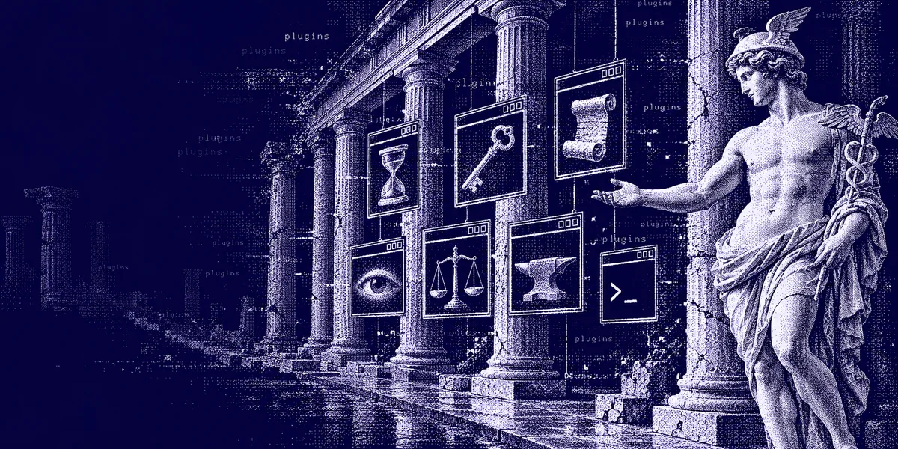

Ledgerline
Inspect session costs and usage in Hermes Desktop.
hermes plugins install hermes-ledgerline
hermes plugins enable hermes-ledgerlineDesktop panels, agent tools, web backends and model providers for Hermes Agent. Every one is reviewed and pinned to an exact commit in the Hermes plugin catalog, so one command installs it.

hermes plugins install <name>19 plugins
Inspect session costs and usage in Hermes Desktop.
hermes plugins install hermes-ledgerline
hermes plugins enable hermes-ledgerlineBrowse Nous Portal model prices and account balances in Hermes Desktop.
hermes plugins install hermes-nous-prices
hermes plugins enable hermes-nous-pricesView and manage Bot Mode agents in a shared office in Hermes Desktop.
hermes plugins install hermes-office
hermes plugins enable hermes-officeTrack subscription quotas and reset times in Hermes Desktop.
hermes plugins install hermes-resetwatch
hermes plugins enable hermes-resetwatchprobe.py re-executes itself under the Hermes Python interpreter located via HERMES_PYTHON / VIRTUAL_ENV / the parent process or the Hermes installer's managed venv (HERMES_HOME/installs); it reads provider API keys from the Hermes .env, Hermes's own saved OAuth logins (auth.json credential pool, read-only), the Vaultwarden plugin's local secret cache (cache/vaultwarden_cache.json, read-only, only when Vaultwarden is the sole enabled secret source) and Docker s6 container env files, plus other coding-assistant CLIs' local logins (including macOS keychain entries), and sends each key only to its own vendor's usage endpoint.
Read RSS and Atom feeds and discuss articles in Hermes Desktop.
hermes plugins install hermes-rss
hermes plugins enable hermes-rssfeeds and full articles are fetched with curl through the gateway's shell.exec on the connected Hermes host (public-IPv4 SSRF guard); opt-in AI grading sends article excerpts to your configured model and creates HERMES_HOME/skills/rss-importance-grading/SKILL.md if missing; opt-in image loading fetches publisher images directly from Desktop.
Persistent session file diffs, run comparisons, and individual edit history in Hermes Desktop.
hermes plugins install hermes-session-diff
hermes plugins enable hermes-session-diffManage SSH connections and remote workspaces in Hermes Desktop.
hermes plugins install hermes-ssh
hermes plugins enable hermes-sshBrowse Tailscale devices and connect to remote Hermes instances in Hermes Desktop.
hermes plugins install hermes-tailscale
hermes plugins enable hermes-tailscaleRun the Hermes terminal interface in a Hermes Desktop workspace tab.
hermes plugins install hermes-terminal
hermes plugins enable hermes-terminalLocal developer tools, transformation recipes, and reviewed chat handoff inside Hermes Desktop.
hermes plugins install hermes-toolsmith
hermes plugins enable hermes-toolsmithClinePass model provider with live model discovery and a curated fallback catalog.
Needs CLINE_API_KEY
hermes plugins install clinepass
hermes plugins enable clinepassDelegate coding tasks to the Devin CLI, on your computer or in Devin Cloud, with live progress cards and change review in Hermes Desktop. Every launch goes through Hermes approval; Cloud runs need a separate Cloud-managed-permissions confirmation.
hermes plugins install devin
hermes plugins enable devinspawns the vendor devin CLI from PATH or cli_path (devin acp, devin acp --cloud, devin --print, devin auth status, devin models list); the CLI edits files and runs shell commands in a folder the model picks (any folder unless allowed_roots is set) under the configured permission mode (accept-edits/smart auto-allow edits, dangerous auto-allows everything and needs allow_dangerous: true), and talks to Cognition's servers; Devin Cloud runs use Cognition-managed permissions that Hermes does not gate. Every model-initiated launch goes through Hermes approval; follow-ups typed on a Desktop run card and answers to Devin's prompts on the card start or allow actions on that click without a Hermes prompt (unanswered card prompts are denied after 300 s by default). Uses the existing Devin CLI login and stores no credentials; Hermes provider, bot and tool secrets are stripped from the child environment (extra_env is passed as set). Background runs continue after the turn up to their timeout and post Devin's output back into the conversation as a message when they finish. Run history (prompts, diffs, command output) and model preferences are saved under plugin-data/devin unless persist_runs is off. Independent community add-on, not affiliated with Cognition.
Scholarly search, citation traversal, grouped counts, and fulltext access through OpenAlex with session spending limits.
Needs OPENALEX_API_KEY
hermes plugins install openalex
hermes plugins enable openalexSearch internet-connected hosts, open ports, DNS and CVEs through Shodan, with a credit ledger that stops before your monthly query credits run out.
Needs SHODAN_API_KEY
hermes plugins install shodan
hermes plugins enable shodanCloudflare Web Search backend for Hermes' existing web_search tool, with Ceramic, Exa, or Linkup selected in plugin settings. Search only; keep a separate extract backend.
Needs CLOUDFLARE_WEB_SEARCH_API_TOKEN
hermes plugins install cloudflare-web-search
hermes plugins enable cloudflare-web-searchsends queries, result limits, gateway IDs, and optional BYOK aliases to api.cloudflare.com, which forwards searches to the selected provider and records them in AI Gateway logs. Requests can consume gateway credits or provider quota. Reads its own settings and CLOUDFLARE_WEB_SEARCH_API_TOKEN through Hermes' profile-scoped APIs. Registers one web provider, with no new tools, hooks, background processes, file writes, or self-updater. Independent community plugin.
Public plugins that aren't listed in the Hermes catalog yet: under review, experimental, or not submitted. They install straight from GitHub at the latest commit, and Hermes maintainers haven't reviewed them, so read each README before you install.
An experiment: a simulated fruit fly connectome, built from real fly brain wiring, picks the agent's next tool call, with a live Desktop panel to watch it decide.
Needs a few setup steps first. Read the setup guide.
Not reviewed by Hermes maintainers.
Pick up recent Claude Code, Codex and Cursor sessions inside Hermes, with a compact pick-up card and the foreign transcript kept as inert history.
hermes plugins install Adolanium/hermes-plugin-resume-session --enableInstalls from GitHub at the latest commit. Not reviewed by Hermes maintainers.
Jina Reader web backend for Hermes Agent: read any page as Markdown, search the web
hermes plugins install Adolanium/hermes-jina
hermes plugins enable hermes-jinaInstalls from GitHub at the latest commit. Not reviewed by Hermes maintainers.
hermes plugins install <name> clones the plugin at the commit the catalog pins. Hermes Desktop has the same button on its catalog page.
hermes plugins enable <name> turns it on. Desktop plugins appear in the sidebar; agent tools and backends are picked up by the agent.
New versions reach you only after a reviewed pin bump in the catalog. Then hermes plugins update <name> brings them in.